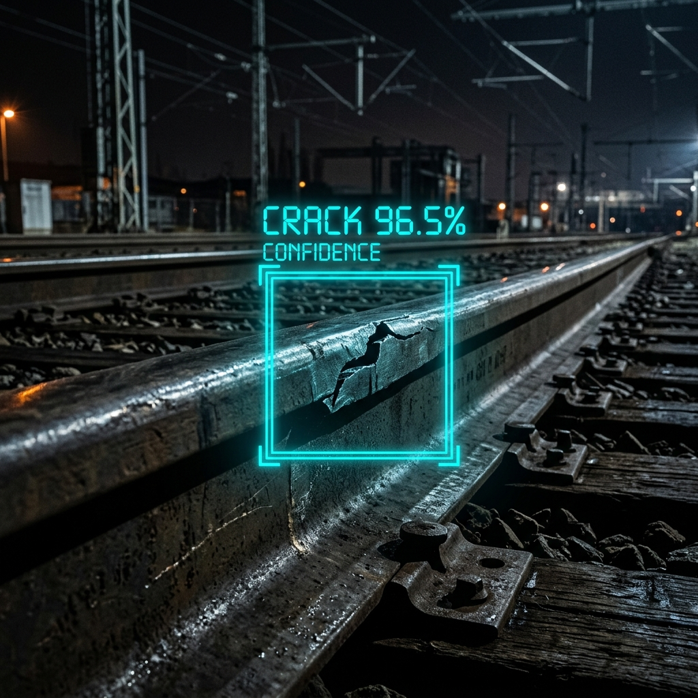

Problem / user
Manual railway track inspection is slow, expensive, and prone to human error. The intended user is a track inspection team using this as a screening aid, not an automated pass/fail authority.
An object-detection model that flags railway track sections as defective or non-defective from a photo, to support (not replace) manual track inspection.
Manual railway track inspection is slow, expensive, and prone to human error. The intended user is a track inspection team using this as a screening aid, not an automated pass/fail authority.
A confirmed data check found that about 12.5% of test images have a near-duplicate in the training set, so real-world accuracy is likely somewhat lower than the reported test metric. Full details are documented in the repository's ISSUE_LOG.md.
